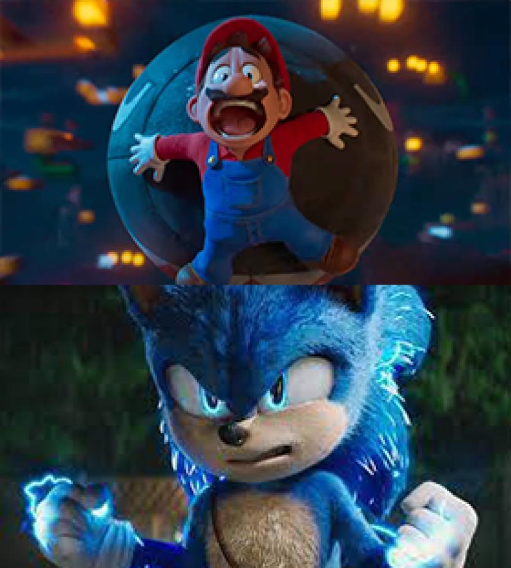

Super Mario Bros: la Película, la está rompiendo en cines. Desde su dia de estreno, ha llenado salas de familias que quieren ver la película basada en los videojuegos del fontanero,
y es algo que se está demostrando en las cifras ya que, según Deadline, se estima que este viernes 7 de abril,
la película de Illumination y Nintendo recaudaría cerca de $59millones de dólares, lo que, sumado a lo recaudado miércoles y jueves,
la dejaría con una recaudación total de $137 millones para sus primeros tres días en cartelera, y la dejaría encaminada a los $195 millones para los cinco días.
Esto supondría un record para Illumination que sobrepasaría las cifras de dos películas, Minions, que en sus primeros tres días recaudó $115.7 millones,
y Mi Villano Favorito 2, que sus primeros cinco días recaudó $145 millones. Por si fuera poco, la película de Super Mario Bros.
Estaría logrando uno de los estrenos más taquilleros para los cinco días de lanzamiento, pisándole la cola a Transformers: la Venganza de los Caídos,
mega producción que en el mismo periodo recaudó $200 millones.
Con estos datos, la película de Super Mario Bros estaría cerca de las ganancias de las películas de Sonic, superando la primera que recaudó $110 millones en su primer fin de semana, y pisando los talones de la secuela, que consiguió $141 millones en la misma cantidad de días. No obstante, esta competencia solo demuestra que las adaptaciones de videojuegos al cine están consiguiendo la aprobación del público, y demostrando que el cine sigue siendo una fuente de entretención viable.
Queda esperar a lo que ocurra este fin de semana que coincide con Pascua, lo que podría mejorar el panorama para la película del fontanero. Si todo resulta bien, Super Mario Bros: la Película, sería la tercera película más taquillera en sus tres primeros días en Semana Santa, quedando detrás de Batman vs Superman y Rápidos y Furiosos 7.